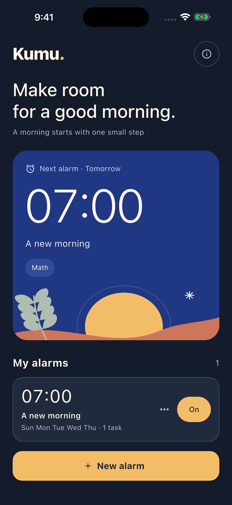
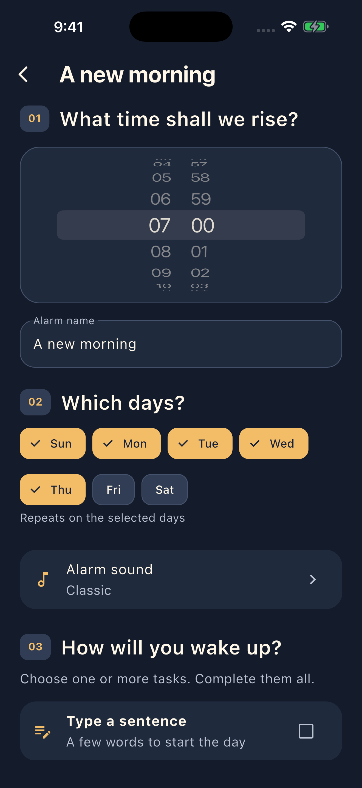
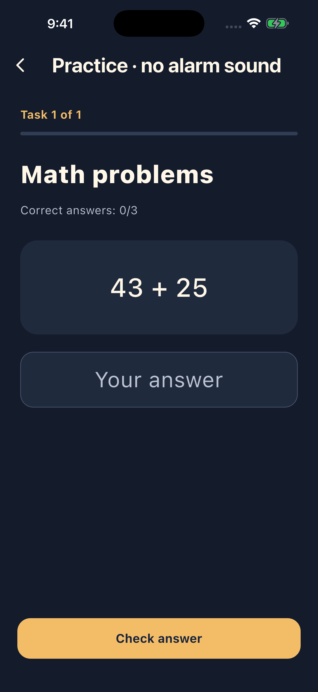

Choose your moment
Your time, your days, and eight sounds to choose from. All in one place.
A MORNING BEGINS WITH ONE SMALL STEP
An alarm with little tasks to help you get moving. Choose your time, your sound, and the first step of your day.
Now available on the App StoreFor iPhone · iOS 26 or later

01 / THE MORNING ROUTINE
Every morning is different. The way you wake up can be, too.
Your time, your days, and eight sounds to choose from. All in one place.
Write your own sentence, solve a few math problems, or try the experimental photo task. Pick one or combine a few.
Complete your tasks in the app to finish the wake-up and cancel its backup alarms.
02 / A CLOSER LOOK
Simple settings. Clear tasks. Room for your kind of morning.


03 / PRIVATE BY DESIGN
No account, no ads, no tracking tools. Your task photo is processed on your iPhone. It is never saved or sent to the developer.
Read the privacy policy ↗Use an independent backup for important wake-ups. Alarm operation depends on your device and settings; waking up is not guaranteed. Safe use information
Yes. iOS allows you to stop an alert through system controls. Kumu. schedules one-minute backup alarms 30 minutes ahead and renews that window while you complete tasks. If the app stays closed beyond that window, the backup sequence may end.
Take a toilet photo with the camera for on-device recognition. Recognition is experimental. After three failed attempts, or if the camera or recognition is unavailable, you can switch to five alternative math problems.
Kumu. is made for iPhone with iOS 26 or later. The app uses Hebrew when Hebrew is your primary language, and English for all other primary languages.
Kumu. is now available on the App Store. View Kumu on the App Store ↗
KUMU. / GOOD MORNING, AGAIN.
Take the first step into your morning. Now on iPhone.
Your morning starts hereDownload on the App Store